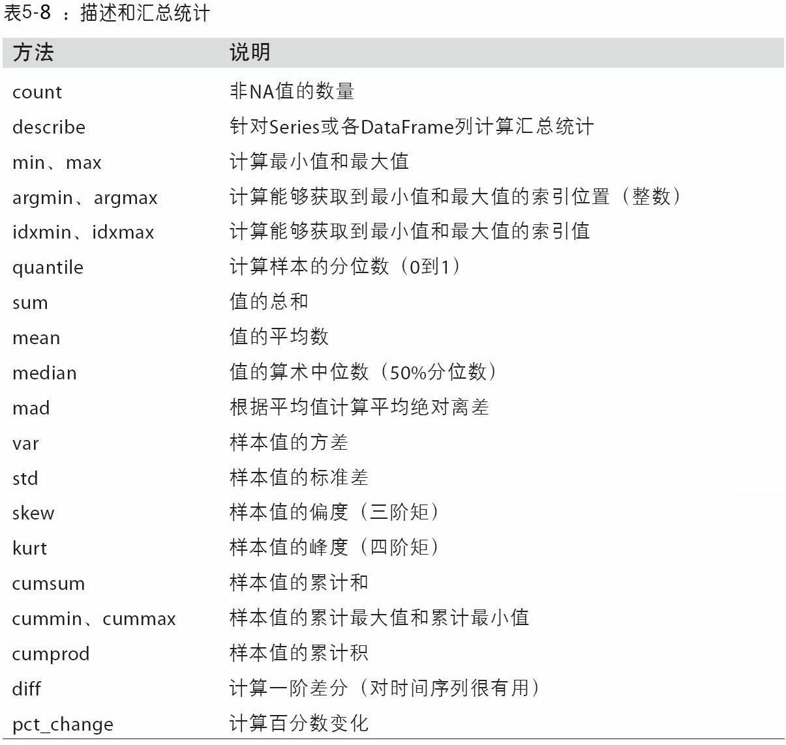

from IPython.core.interactiveshell import InteractiveShell
InteractiveShell.ast_node_interactivity = "all"
import numpy as np
import pandas as pd
from pandas import Series, DataFrame
import matplotlib.pyplot as plt
import seaborn as sns
import statsmodels as sm
Python内置数据结构¶
列表（List）¶
列表及其创建¶
列表是一种用于保存一系列有序项目的集合。Python中的有序序列都从0开始。项目的列表应该用方括号括起来，在各项目之间用逗号隔开。你可以添加、 移除或搜索列表中的项目，列表是一种可变的（ Mutable） 数据类型。列表是一种序列。列表中的元素可以是不同类型的。
shoplist = ['apple', 'mango', 'carrot', 'banana']
shoplist
# 列表中的元素可以是不同类型的
a = [1,'app',True,3e-3]
a
# 列表中的元素也可以是列表
b = [a,2]
b
b[1]
b[0][2] # 多层级项目的索引
len(b)
len(b[0])
# 可以指定空列表
c = []
c
len(c)
['apple', 'mango', 'carrot', 'banana']
[1, 'app', True, 0.003]
[[1, 'app', True, 0.003], 2]
2
True
2
4
[]
0
元组可以转化为列表，list函数常用来在数据处理中实体化迭代器或生成器。
tup = ('foo', 'bar', 'baz')
b_list = list(tup)
b_list
gen = range(10)
gen
list(gen)
['foo', 'bar', 'baz']
range(0, 10)
[0, 1, 2, 3, 4, 5, 6, 7, 8, 9]
特殊规律的列表的创建¶
创建等差数列¶
用range函数，其用法为range(start, stop[, step]) -> range object，其中start, stop和step三个参数都必须是整数，返回结果为range对象，可以通过list或for循环将其实例化，实例化后为以start开头（包含），stop结尾（不包含），步长为step的等差数列。
range(10)
range(1,10)
range(1,10,2)
list(range(10))
list(range(1,10))
list(range(1,10,2))
range(0, 10)
range(1, 10)
range(1, 10, 2)
[0, 1, 2, 3, 4, 5, 6, 7, 8, 9]
[1, 2, 3, 4, 5, 6, 7, 8, 9]
[1, 3, 5, 7, 9]
创建全同列表¶
列表的拼接¶
加号用于多个列表的拼接，extend方法用于列表的就地拼接（不返回拼接结果）。通过加法将列表拼接的计算量较大。列表乘以整数代表列表复制n份后拼接。
a = [4, None, 'foo']
b = [7, 8, (2, 3)]
a+b
a.extend(b)
a
b*2
[4, None, 'foo', 7, 8, (2, 3)]
[4, None, 'foo', 7, 8, (2, 3)]
[7, 8, (2, 3), 7, 8, (2, 3)]
列表元素的添加、插入与删除¶
在末尾添加元素用append方法，在特定的位置插入元素用insert方法，删除特定位置的元素用pop方法，删除特定值的元素用remove方法，注意remove只会先寻找第一个值并除去。注意这些方法都是就地处理方法。
b_list.append('foo')
b_list
b_list.insert(1, 'red')
b_list
b_list.pop(2)
b_list
b_list.remove('foo')
b_list
['foo', 'bar', 'baz', 'foo']
['foo', 'red', 'bar', 'baz', 'foo']
'bar'
['foo', 'red', 'baz', 'foo']
['red', 'baz', 'foo']
如果列表已经排序，则用bisect模块是更高效的插入方法，它支持二分查找，和向已排序的列表插入值。bisect.bisect可以返回插入值后仍保证排序的位置，bisect.insort是按顺序插入值后的新列表。
import bisect
c = [1, 2, 2, 2, 3, 4, 7]
bisect.bisect(c, 2)
bisect.bisect(c, 5)
bisect.insort(c, 6)
c
4
6
[1, 2, 2, 2, 3, 4, 6, 7]
列表元素的选取¶
列表（以及其他序列）用方括号来选取元素，这被称为索引（ Indexing） 运算符。注意所有Python序列从0开始计数
选取序列中的一部分称为切片。你同样可以在切片操作中提供第三个参数， 这一参数将被视为切片的步长（ Step） （在默认情况下， 步长大小为 1），负数步长意味着倒排 ：
a = [1,'app',True,3e-3]
# 序列从0开始计数
a[0]
a[2]
# 序列包括开头不包括结尾
a[0:2]
#当需要选取到直至结尾时，省略冒号后的索引
a[1:]
# 负数索引代表从后向前索引，从-1开始计数
a[-1]
#Python无法简单地选取跳跃、无规律的列表元素
shoplist = ['apple', 'mango', 'carrot', 'banana']
name = 'swaroop'
print('Item -2 is', shoplist[-2])
print('Item 1 to -1 is', shoplist[1:-1]) # 可以正负索引混用
print('Item start to -1 is', shoplist[:-1]) # 除了最后一个元素
print('Item start to end is', shoplist[:]) # 省略冒号前后，则意味着选取所有元素
# 字符串同理
print('characters 1 to 3 is', name[1:3])
print('characters 2 to end is', name[2:])
print('characters 1 to -1 is', name[1:-1])
print('characters start to end is', name[:])
1
True
[1, 'app']
['app', True, 0.003]
0.003
Item -2 is carrot
Item 1 to -1 is ['mango', 'carrot']
Item start to -1 is ['apple', 'mango', 'carrot']
Item start to end is ['apple', 'mango', 'carrot', 'banana']
characters 1 to 3 is wa
characters 2 to end is aroop
characters 1 to -1 is waroo
characters start to end is swaroop
shoplist = ['apple', 'mango', 'carrot', 'banana']
shoplist[::1]
shoplist[::2]
shoplist[::3]
shoplist[::-1] # 负数步长意味着倒排
['apple', 'mango', 'carrot', 'banana']
['apple', 'carrot']
['apple', 'banana']
['banana', 'carrot', 'mango', 'apple']
列表元素的检查¶
用 in 语句。
shoplist = ['apple', 'mango', 'carrot', 'banana']
'apple' in shoplist
'google' in shoplist
'google' not in shoplist
# 无法同时检查多个元素，因为多个元素会被当做一个整体
['apple', 'mango'] in shoplist
('apple', 'mango') in shoplist
True
False
True
False
False
列表的排序¶
可以用sort函数将一个列表原地排序（不创建新的对象）。sort有一些选项，有时会很好用。其中之一是二级排序key，可以用这个key进行排序。例如，我们可以按长度对字符串进行排序。
sorted函数可以从任意序列的元素返回一个新的排好序的列表。
a = [7, 2, 5, 1, 3]
a.sort()
a
b = ['saw', 'small', 'He', 'foxes', 'six']
b.sort(key=len)
b
sorted([7, 1, 2, 6, 0, 3, 2])
sorted('horse race')
[1, 2, 3, 5, 7]
['He', 'saw', 'six', 'small', 'foxes']
[0, 1, 2, 2, 3, 6, 7]
[' ', 'a', 'c', 'e', 'e', 'h', 'o', 'r', 'r', 's']
列表的翻转¶
可以直接用步长为-1的切片操作，也可以用reversed函数，注意eversed是一个生成器，只有实体化（即列表或for循环）之后才能创建翻转的序列。
a = range(10)
a
b = list(a)
b
a[::-1]
list(a[::-1])
b[::-1]
reversed(a)
reversed(b)
list(reversed(a))
list(reversed(b))
range(0, 10)
[0, 1, 2, 3, 4, 5, 6, 7, 8, 9]
range(9, -1, -1)
[9, 8, 7, 6, 5, 4, 3, 2, 1, 0]
[9, 8, 7, 6, 5, 4, 3, 2, 1, 0]
<range_iterator at 0x24d20c08990>
<list_reverseiterator at 0x24d20c26c48>
[9, 8, 7, 6, 5, 4, 3, 2, 1, 0]
[9, 8, 7, 6, 5, 4, 3, 2, 1, 0]
enumerate函数¶
enumerate函数用于在迭代一个序列时，跟踪当前项的序号。enumerate(sequence, start=0)，返回一个枚举对象。sequence必须是序列或迭代器iterator，或者支持迭代的对象。enumerate()返回对象的每个元素都是一个元组，每个元组包括两个值，一个是计数，一个是sequence的值，计数是从start开始的，start默认为0。如果我们不仅需要序列值，同时需要值对应的序号时，这很好用。
i = 0
for value in collection:
# do something with value
i += 1
# 等价于
for i, value in enumerate(collection):
# do something with value
list1 = ["这", "是", "一个", "测试"]
for index, item in enumerate(list1):
print("第",index,"个词为：",item)
# 修改起始序号为1：
for index, item in enumerate(list1,1):
print("第",index,"个词为：",item)
第 0 个词为： 这
第 1 个词为： 是
第 2 个词为： 一个
第 3 个词为： 测试
第 1 个词为： 这
第 2 个词为： 是
第 3 个词为： 一个
第 4 个词为： 测试
zip函数¶
zip可以将多个列表、元组或其它序列成对组合成一个元组列表。zip可以处理任意多的序列，元素的个数取决于最短的序列。
seq1 = ['foo', 'bar', 'baz']
seq2 = ['one', 'two', 'three']
zipped = zip(seq1, seq2)
list(zipped)
seq3 = [False, True]
list(zip(seq1, seq2, seq3))
[('foo', 'one'), ('bar', 'two'), ('baz', 'three')]
[('foo', 'one', False), ('bar', 'two', True)]
zip的常见用法之一是同时迭代多个序列，可能结合enumerate使用
for i, (a, b) in enumerate(zip(seq1, seq2)):
print('{0}: {1}, {2}'.format(i, a, b))
0: foo, one
1: bar, two
2: baz, three
给出一个“被压缩的”序列，zip可以被用来解压序列。也可以当作把行的列表转换为列的列表。
pitchers = [('Nolan', 'Ryan'), ('Roger', 'Clemens'),('Schilling', 'Curt')]
first_names, last_names = zip(*pitchers) # 注意这里的星号
first_names
last_names
('Nolan', 'Roger', 'Schilling')
('Ryan', 'Clemens', 'Curt')
元组（Tuple）¶
元组及其创建¶
元组（ Tuple） 用于将多个对象保存到一起。 各对象应该用圆括号括起来（括号也可以省略，但并不推荐），在各对象之间用逗号隔开。你可以将它们近似地看作列表，但它们是不可变的，也就是说，你不能编辑或更改元组。元组通常用于保证某一语句或某一用户定义的函数可以安全地采用一组数值， 意即元组内的数值不会改变。元组同时也是一个序列。
zoo = ('python', 'elephant', 'penguin')
print('Number of animals in the zoo is', len(zoo))
new_zoo = 'monkey', 'camel', zoo
print('Number of cages in the new zoo is', len(new_zoo))
print('All animals in new zoo are', new_zoo)
print('Animals brought from old zoo are', new_zoo[2])
print('Last animal brought from old zoo is', new_zoo[2][2])
print('Number of animals in the new zoo is',
len(new_zoo)-1+len(new_zoo[2]))
Number of animals in the zoo is 3
Number of cages in the new zoo is 3
All animals in new zoo are ('monkey', 'camel', ('python', 'elephant', 'penguin'))
Animals brought from old zoo are ('python', 'elephant', 'penguin')
Last animal brought from old zoo is penguin
Number of animals in the new zoo is 5
一个空的元组由一对圆括号构成， 就像 myempty = () 这样。 然而， 一个只拥有一个项目的元组并不像这样简单。 你必须在第一个（ 也是唯一一个） 项目的后面加上一个逗号来指定它， 如此一来 Python 才可以识别出在这个表达式想表达的究竟是一个元组还是只是一个被括号所环绕的对象， 也就是说， 如果你想指定一个包含项目 2 的元组， 你必须指定 singleton = (2, ) 。
用tuple可以将任意序列或迭代器转换成元组：
tuple([4, 0, 2])
tuple('string')
(4, 0, 2)
('s', 't', 'r', 'i', 'n', 'g')
元组的串联¶
可以用加号运算符将元组拼接起来，元组乘以一个整数，像列表一样，会将几个元组的复制拼接起来。
(4, None, 'foo') + (6, 0) + ('bar',)
('foo', 'bar') * 4
(4, None, 'foo', 6, 0, 'bar')
('foo', 'bar', 'foo', 'bar', 'foo', 'bar', 'foo', 'bar')
元组的拆分¶
如果你想将元组赋值给类似元组的变量，Python会试图拆分等号右边的值，即使含有元组的元组也会被拆分
tup = (4, 5, 6)
a, b, c = tup
b
tup = 4, 5, (6, 7)
a, b, (c, d) = tup
d
seq = [(1, 2, 3), (4, 5, 6), (7, 8, 9)]
for a, b, c in seq:
print('a={0}, b={1}, c={2}'.format(a, b, c))
5
7
a=1, b=2, c=3
a=4, b=5, c=6
a=7, b=8, c=9
在 Python 中交换两个变量的最快方法是利用元组：
a = 5; b = 8
a, b
a, b = b, a
a, b
(5, 8)
(8, 5)
Python最近新增了更多高级的元组拆分功能，允许从元组的开头“摘取”几个元素。它使用了特殊的语法*rest，这也用在函数签名中以抓取任意长度列表的位置参数。rest的部分是想要舍弃的部分，rest的名字不重要。作为惯用写法，许多Python程序员会将不需要的变量使用下划线。
values = 1, 2, 3, 4, 5
a, b, *rest = values
a, b
rest # 有趣的是rest结果为列表而非元组
a, b, *_ = values
(1, 2)
[3, 4, 5]
字典（Dictionary）¶
字典及其创建¶
字典将键值（Keys）与值（Values）联立到一起，你可以通过使用符号构成 d = {key : value1 , key2 : value2} 这样的形式， 来成对地指定键值与值。 在这里要注意到成对的键值与值之间使用冒号分隔， 而每一对键值与值则使用逗号进行区分， 它们全都由一对花括号括起。你只能使用不可变的对象（ 如字符串） 作为字典的键值，键值必须是唯一的，但是你可以使用可变或不可变的对象作为字典中的值。基本上这段话也可以翻译为你只能使用简单对象作为键值。
字典中的成对的键值—值配对不会以任何方式进行排序。 如果你希望为它们安排一个特别的次序， 只能在使用它们之前自行进行排序。
# “ab”是地址（ Address） 簿（ Book） 的缩写
ab = {
'Swaroop': 'swaroop@swaroopch.com',
'Larry': 'larry@wall.org',
'Matsumoto': 'matz@ruby-lang.org',
'Spammer': 'spammer@hotmail.com'
}
print("Swaroop's address is", ab['Swaroop']) # 可以用键值作为索引
# 用序列创建字典
key_list=['Swaroop','Larry','Matsumoto','Spammer']
value_list=['swaroop@swaroopch.com','larry@wall.org',
'matz@ruby-lang.org','spammer@hotmail.com']
mapping = {} # 创建空字典
for key, value in zip(key_list, value_list):
mapping[key] = value
mapping
Swaroop's address is swaroop@swaroopch.com
{'Swaroop': 'swaroop@swaroopch.com',
'Larry': 'larry@wall.org',
'Matsumoto': 'matz@ruby-lang.org',
'Spammer': 'spammer@hotmail.com'}
字典的值可以是任意Python对象，而键通常是不可变的标量类型（整数、浮点型、字符串）或元组（元组中的对象必须是不可变的）。这被称为“可哈希性”。可以用hash函数检测一个对象是否是可哈希的（可被用作字典的键）
hash('string')
hash((1, 2, (2, 3)))
# 以下报错，因为[2, 3]为列表，是可变的
# hash((1, 2, [2, 3]))
# 如果一定要用非简单对象作为键值，可用tuple函数生成元组
hash(tuple([1, 2, 3]))
d = {}
d[tuple([1, 2, 3])] = 5
d
4059453277948022892
1097636502276347782
2528502973977326415
{(1, 2, 3): 5}
字典的默认值¶
value = some_dict.get(key, default_value)
# 等价于
if key in some_dict:
value = some_dict[key]
else:
value = default_value
字典的并集¶
用update方法可以将一个字典与另一个融合，是就地方法。由于无序，相同的键值对会合并。相当于并集。
ab.update({'Matsumoto': 'matz@ruby-lang.org', 'Matsumoto2' : 'matz@ruby-lang.org'})
ab
{'Swaroop': 'swaroop@swaroopch.com',
'Larry': 'larry@wall.org',
'Matsumoto': 'matz@ruby-lang.org',
'Spammer': 'spammer@hotmail.com',
'Matsumoto2': 'matz@ruby-lang.org'}
字典元素的添加、删除、选取、检查¶
由于字典是无序的，所以不存在插入的概念，直接给某个键值赋值就是元素的添加，用del语句或pop方法来删除。用键值为索引进行选取，用in语句来检查键值是否在字典内。（如何检查一个值，而非键值，是否在字典内？）
ab = {
'Swaroop': 'swaroop@swaroopch.com',
'Larry': 'larry@wall.org',
'Matsumoto': 'matz@ruby-lang.org',
'Spammer': 'spammer@hotmail.com'
}
# 删除一对键值—值配对
del ab['Spammer'] # 可以用键值作为索引，删除键值意味着同时删除了键值—值配对
print('\nThere are {} contacts in the address-book\n'.format(len(ab)))
for name, address in ab.items(): # items是字典的常用方法
print('Contact {} at {}'.format(name, address))
# 添加一对键值—值配对
ab['Guido'] = 'guido@python.org' # 直接赋值就意味着直接添加一个项目
if 'Guido' in ab: # 可以使用 in 运算符来检查某对键值—值配对是否存在
print("\nGuido's address is", ab['Guido'])
ab.pop('Guido')
'Guido' in ab
'swaroop@swaroopch.com' in ab # 不能直接检测值
There are 3 contacts in the address-book
Contact Swaroop at swaroop@swaroopch.com
Contact Larry at larry@wall.org
Contact Matsumoto at matz@ruby-lang.org
Guido's address is guido@python.org
'guido@python.org'
False
False
字典键与值分别选取¶
keys和values是字典的键和值的迭代器方法。虽然键值对没有顺序，这两个方法可以用相同的顺序输出键和值：
ab.keys()
ab.values()
list(ab.keys())
list(ab.values())
dict_keys(['Swaroop', 'Larry', 'Matsumoto'])
dict_values(['swaroop@swaroopch.com', 'larry@wall.org', 'matz@ruby-lang.org'])
['Swaroop', 'Larry', 'Matsumoto']
['swaroop@swaroopch.com', 'larry@wall.org', 'matz@ruby-lang.org']
集合（Set）¶
集合及其创建¶
集合（ Set） 是简单对象的无序集合（ Collection），元素通常也是不可变的。可用两种方式创建集合，一是用函数set()将简单列表包围来创建，二是直接用大括号将元素包围起来。可以将集合视为没有键值的字典。
a=set(['brazil', 'russia', 'india'])
b={'brazil', 'russia', 'india'}
a
b
{'brazil', 'india', 'russia'}
{'brazil', 'india', 'russia'}
集合运算¶
并集用 union 方法，或者 | 运算符。
交集用 intersection 方法，或者 & 运算符。
差集用 difference 方法，或者 - 运算符。
只在两集合之一，用 symmetric_difference 方法，或者 ^ （异或）运算符。
a = {1, 2, 3, 4, 5}
b = {3, 4, 5, 6, 7, 8}
# 返回结果
a.union(b) # 返回结果而非就地并集
a | b # 返回结果而非就地并集
a.intersection(b) # 返回结果而非就地交集
a & b # 返回结果而非就地交集
a.difference(b) # 返回差集
a - b # 返回差集
a.symmetric_difference(b) # 返回异或
a ^ b # 返回异或
c = a.copy()
c
# 就地处理
a.update(b) # 就地并集
a|=b # 就地并集
a.intersection_update(b) # 就地交集
a&=b # 就地交集
a.difference_update(b) # 就地差集
a-=b # 就地差集
a.symmetric_difference_update(b) # 就地异或
a ^= b # 就地异或
4 in b # 属于
5 not in b # 不属于
a.add(9) # 新增元素
a.remove(9) # 移除元素，如果不存在，则报错
a.clear() # 将集合清空
b.issubset(c) # 子集（被包含于）
b.issuperset(c) # 超集（包含于）
b.isdisjoint(c) # 有交集
{1, 2, 3} == {3, 2, 1} # 集合相等，元素相同即相等
{1, 2, 3, 4, 5, 6, 7, 8}
{1, 2, 3, 4, 5, 6, 7, 8}
{3, 4, 5}
{3, 4, 5}
{1, 2}
{1, 2}
{1, 2, 6, 7, 8}
{1, 2, 6, 7, 8}
{1, 2, 3, 4, 5}
True
False
False
False
False
True
序列的其他特性¶
变量引用与绑定¶
当你创建了一个对象并将其分配给某个变量时， 变量只会查阅（ Refer） 某个对象， 并且它也不会代表对象本身。 也就是说， 变量名只是指向你计算机内存中存储了相应对象的那一部分。 这叫作将名称绑定（ Binding） 给那一个对象。
print('Simple Assignment')
shoplist = ['apple', 'mango', 'carrot', 'banana']
# mylist 只是指向同一对象的另一种名称
mylist = shoplist
# 我购买了第一项项目， 所以我将其从列表中删除
del shoplist[0] # mylist 与 shoplist绑定，删除'apple'与shoplist[0]的关系，同时意味着删除'apple'与mylist[0]的关系
print('shoplist is', shoplist)
print('mylist is', mylist)
# 注意到 shoplist 和 mylist 二者都打印出了其中都没有 apple 的同样的列表， 以此我们确认
# 它们指向的是同一个对象
# 无论这里删除的是shoplist还是mylist，二者都会同时变化
print('Copy by making a full slice')
# 通过生成一份完整的切片制作一份列表的副本
mylist = shoplist[:]
# 用切片是mylist与shoplist的元素，即与列表['apple', 'mango', 'carrot', 'banana']绑定
# 删除第一个项目
del mylist[0]
print('shoplist is', shoplist)
print('mylist is', mylist)
# 注意到现在两份列表已出现不同
Simple Assignment
shoplist is ['mango', 'carrot', 'banana']
mylist is ['mango', 'carrot', 'banana']
Copy by making a full slice
shoplist is ['mango', 'carrot', 'banana']
mylist is ['carrot', 'banana']
序列推导式¶
列表推导¶
对于满足某个条件的部分元素，实施某种运算。其中if 条件也可省略，则对所有元素都实施该运算。推导式可以嵌套。
[expr for val in collection if condition]
等价于
result = []
for val in collection:
if condition:
result.append(expr)
例如，给定一个字符串列表，我们可以过滤出长度在2及以下的字符串，并将其转换成大写
strings = ['a', 'as', 'bat', 'car', 'dove', 'python']
[x.upper() for x in strings if len(x) > 2]
['BAT', 'CAR', 'DOVE', 'PYTHON']
集合推导式¶
与列表推导的形式几乎一致，将括号改为花括号即可。不同点在于集合结果可以去重，但不保证顺序。
strings = {'a', 'as', 'bat', 'car', 'dove', 'python'}
{x.upper() for x in strings if len(x) > 2}
{'BAT', 'CAR', 'DOVE', 'PYTHON'}
NumPy 基本数据结构¶
ndarray：多维数组¶
ndarray是一个通用的同构数据多维容器，也就是说，其中的所有元素必须是相同类型的。每个数组都有一个shape（一个表示各维度大小的元组）和一个dtype（一个用于说明数组数据类型的对象）。np.array会尝试为新建的这个数组推断出一个较为合适的数据类型。数据类型保存在一个特殊的dtype对象中。
多维数组的本质是嵌套数组，并不存在固定的行与列的概念。比如一维数组无所谓是行向量或列向量。
data = np.random.randn(2, 3)
data
data.shape
data.ndim
data.dtype
d=np.random.randn(3)
d
d.shape
array([[-1.23533084, 0.89716571, -0.97908478],
[ 0.16474919, -0.99217301, 0.79343481]])
(2, 3)
2
dtype('float64')
array([-1.09065449, 0.80173337, 0.5895384 ])
(3,)
用数据创建数组¶
使用array函数。它接受一切序列型的对象（包括其他数组），然后产生一个新的含有传入数据的NumPy数组。嵌套序列（比如由一组等长列表组成的列表）将会被转换为一个多维数组。
data1 = [6, 7.5, 8, 0, 1]
arr1 = np.array(data1)
arr1
data2 = [[1, 2, 3, 4], [5, 6, 7, 8]]
arr2 = np.array(data2)
arr2
array([6. , 7.5, 8. , 0. , 1. ])
array([[1, 2, 3, 4],
[5, 6, 7, 8]])
数组的初始化¶
np.empty可以创建一个没有任何具体值的数组，参数为代表数组shape的元组（要打括号），返回元素并不总是0，很多情况下，它返回的都是一些未初始化的垃圾值。
np.empty_like输入参数为另一个数组，返回和其形状相同的初始化的数组。
a=np.empty((2,3))
a
np.empty_like(a)
array([[1.23533084, 0.89716571, 0.97908478],
[0.16474919, 0.99217301, 0.79343481]])
array([[1.23533084, 0.89716571, 0.97908478],
[0.16474919, 0.99217301, 0.79343481]])
特殊规律的数组的创建¶
zeros和ones分别可以创建指定长度或形状的全0或全1数组。
full创建全同数组。
eye或identity创建单位矩阵。
arange创建一维数组（向量），与range类型，生成等差数列。
a=np.zeros(10)
a
b=np.zeros((10,2))
b
c=np.ones(3)
c
d=np.ones((4,3,2))
# 第1维是最外层嵌套单元中子元素的个数，第2维是第2层嵌套单元中子元素的个数，以此类推
# 并不严格存在行、列、页的概念
# 对3维数组来说，对应页、行、列。对2维数组来说，对应行、列。对1维数组来说，对应列。
d
e=np.full((4,5),3)
e
np.eye(4)
np.eye(4,5)
np.eye(4,k=1) # 主对角线向上平移1
np.zeros_like(a) # 与a形状相同的全0数组
np.ones_like(b) # 与b形状相同的全1数组
np.full_like(e,4) # 与e形状相同的全4数组
array([0., 0., 0., 0., 0., 0., 0., 0., 0., 0.])
array([[0., 0.],
[0., 0.],
[0., 0.],
[0., 0.],
[0., 0.],
[0., 0.],
[0., 0.],
[0., 0.],
[0., 0.],
[0., 0.]])
array([1., 1., 1.])
array([[[1., 1.],
[1., 1.],
[1., 1.]],
[[1., 1.],
[1., 1.],
[1., 1.]],
[[1., 1.],
[1., 1.],
[1., 1.]],
[[1., 1.],
[1., 1.],
[1., 1.]]])
array([[3, 3, 3, 3, 3],
[3, 3, 3, 3, 3],
[3, 3, 3, 3, 3],
[3, 3, 3, 3, 3]])
array([[1., 0., 0., 0.],
[0., 1., 0., 0.],
[0., 0., 1., 0.],
[0., 0., 0., 1.]])
array([[1., 0., 0., 0., 0.],
[0., 1., 0., 0., 0.],
[0., 0., 1., 0., 0.],
[0., 0., 0., 1., 0.]])
array([[0., 1., 0., 0.],
[0., 0., 1., 0.],
[0., 0., 0., 1.],
[0., 0., 0., 0.]])
array([0., 0., 0., 0., 0., 0., 0., 0., 0., 0.])
array([[1., 1.],
[1., 1.],
[1., 1.],
[1., 1.],
[1., 1.],
[1., 1.],
[1., 1.],
[1., 1.],
[1., 1.],
[1., 1.]])
array([[4, 4, 4, 4, 4],
[4, 4, 4, 4, 4],
[4, 4, 4, 4, 4],
[4, 4, 4, 4, 4]])
类型指定、查询与转换¶
在创建数组时，增加参数dtype=np.数据类型，可以指定数据类型。下表是NumPy支持的数据类型，注意包括复数、bool、字符串等。
data1 = [6, 7.5, 8, 0, 1]
arr1 = np.array(data1,dtype=np.int32)
arr1
data2 = [[1, 2, 3, 4], [5, 6, 7, 8]]
arr2 = np.array(data2,dtype=np.float64)
arr2
np.full((4,5),3,dtype=np.float64)
# 通过dtype方法查询数组的数据类型，注意该方法没有参数，后面不能接括号
arr1.dtype
arr2.dtype
array([6, 7, 8, 0, 1])
array([[1., 2., 3., 4.],
[5., 6., 7., 8.]])
array([[3., 3., 3., 3., 3.],
[3., 3., 3., 3., 3.],
[3., 3., 3., 3., 3.],
[3., 3., 3., 3., 3.]])
dtype('int32')
dtype('float64')
用astype方法可以明确地将一个数组从一个dtype转换成另一个dtype。可以进行数字和字符串之间的转换。
# 整数转浮点
arr = np.array([1, 2, 3, 4, 5])
arr.dtype
float_arr = arr.astype(np.float64)
float_arr.dtype
# 字符串转浮点
numeric_strings = np.array(['1.25', '-9.6', '42'], dtype=np.string_)
numeric_strings.astype(float)
arr.astype(np.string_)
dtype('int32')
dtype('float64')
array([ 1.25, -9.6 , 42. ])
array([b'1', b'2', b'3', b'4', b'5'], dtype='|S11')
数组元素的选取¶
# 一维数组的元素选取
arr = np.arange(10)
arr[5]
arr[5:8]
# 高维数组的元素选取
arr2d = np.array([[1, 2, 3], [4, 5, 6], [7, 8, 9]])
arr2d
arr2d[2]
arr2d[0][2]
# 等价于
arr2d[0, 2]
5
array([5, 6, 7])
array([[1, 2, 3],
[4, 5, 6],
[7, 8, 9]])
array([7, 8, 9])
3
3
在多维数组中，如果省略了后面的索引，则返回对象会是一个维度低一点的ndarray（它含有高一级维度上的所有数据。“只有冒号”表示选取整个轴。
注意切片索引返回的是原数据的视图，如果想要复制，用copy方法。而花式索引则是复制原数据。
arr3d = np.array([[[1, 2, 3], [4, 5, 6]], [[7, 8, 9], [10, 11, 12]]])
arr3d
arr3d[0]
# 等价于
arr3d[0,:,:]
arr3d[1, 0]
arr3d[1,1,0:2]
arr3d[1,1,[2,0]] # 所谓花式索引
array([[[ 1, 2, 3],
[ 4, 5, 6]],
[[ 7, 8, 9],
[10, 11, 12]]])
array([[1, 2, 3],
[4, 5, 6]])
array([[1, 2, 3],
[4, 5, 6]])
array([7, 8, 9])
array([10, 11])
array([12, 10])
条件查询¶
通过布尔值可以选取数组中的元素，此时总是创建数据的副本而非视图。注意：Python关键字and和or在布尔型数组中无效。要使用&与|。
names = np.array(['Bob', 'Joe', 'Will', 'Bob', 'Will', 'Joe', 'Joe'])
data = np.random.randn(7, 4)
data
data[names == 'Bob']
data[~(names == 'Bob') & (names != 'Will')]
data[data < 0] = 0
data
array([[ 0.46081855, 1.55118574, 0.66454222, 1.49037626],
[-0.05292381, 0.31378249, -0.49627536, 1.02438452],
[-0.53241888, -2.46352255, 0.53871343, -0.82284411],
[ 1.00797447, -0.01970509, 1.36762537, -0.89122361],
[-0.71301843, -1.78844782, -3.14989564, -0.7884964 ],
[ 0.64657642, -0.40167617, -1.09466897, -0.03397215],
[ 0.888974 , -0.47923412, 0.31798489, -0.51486748]])
array([[ 0.46081855, 1.55118574, 0.66454222, 1.49037626],
[ 1.00797447, -0.01970509, 1.36762537, -0.89122361]])
array([[-0.05292381, 0.31378249, -0.49627536, 1.02438452],
[ 0.64657642, -0.40167617, -1.09466897, -0.03397215],
[ 0.888974 , -0.47923412, 0.31798489, -0.51486748]])
array([[0.46081855, 1.55118574, 0.66454222, 1.49037626],
[0. , 0.31378249, 0. , 1.02438452],
[0. , 0. , 0.53871343, 0. ],
[1.00797447, 0. , 1.36762537, 0. ],
[0. , 0. , 0. , 0. ],
[0.64657642, 0. , 0. , 0. ],
[0.888974 , 0. , 0.31798489, 0. ]])
数组的元素级运算¶
形状相同的数组之间的算数运算与比较，都将用于每个元素的算数运算或比较。注意乘法、除法是元素间相乘，而非矩阵相乘。数组与标量的算术运算会将标量值传播到各个元素。
arr = np.array([[1., 2., 3.], [4., 5., 6.]])
arr
arr * arr
arr - arr
1 / arr
arr ** 0.5
array([[1., 2., 3.],
[4., 5., 6.]])
array([[ 1., 4., 9.],
[16., 25., 36.]])
array([[0., 0., 0.],
[0., 0., 0.]])
array([[1. , 0.5 , 0.33333333],
[0.25 , 0.2 , 0.16666667]])
array([[1. , 1.41421356, 1.73205081],
[2. , 2.23606798, 2.44948974]])
数组的矩阵运算¶
矩阵乘法可用dot函数、dot方法或@符号
x = np.array([[1., 2., 3.], [4., 5., 6.]])
y = np.array([[6., 23.], [-1, 7], [8, 9]])
x
y
x.dot(y)
# 等价于
np.dot(x, y)
# 等价于
x@y
array([[1., 2., 3.],
[4., 5., 6.]])
array([[ 6., 23.],
[-1., 7.],
[ 8., 9.]])
array([[ 28., 64.],
[ 67., 181.]])
array([[ 28., 64.],
[ 67., 181.]])
array([[ 28., 64.],
[ 67., 181.]])
向量在合适的场景下可以是行向量，也可以是列向量。
np.dot(x, np.ones(3)) # np.ones(3)在此时充当3行1列的列向量
np.dot(np.ones(2),x) # np.ones(2)在此时充当1行2列的行向量
array([ 6., 15.])
array([5., 7., 9.])
转置操作用T方法。其他线性代数操作可在numpy.linalg库中找到，下图是常见的函数。（待补充）
x.T
c=np.ones(3)
c
c.T
c.dot(c) # 向量与向量的乘积只能输出点积，无法输出叉乘矩阵结果
c.T.dot(c)
array([[1., 4.],
[2., 5.],
[3., 6.]])
array([1., 1., 1.])
array([1., 1., 1.])
3.0
3.0
数组数学函数¶
NumPy库中有很多对数组整体运算（多为同时对每一个元素运算）的函数。
数组统计函数¶
统计函数是对原数据的聚合。他们既可以当做数组的实例方法调用，也可以当做顶级NumPy函数使用。mean和sum这类的函数可以接受一个axis选项参数，用于计算该轴向上的统计值。


arr = np.array([[0, 1, 2], [3, 4, 5]])
arr
arr.mean()
arr.mean(axis=0) # 计算列的平均值
arr.mean(axis=1) # 计算行的平均值
np.mean(arr,axis=1)
arr.cumsum(axis=0)
arr.cumsum(axis=1)
array([[0, 1, 2],
[3, 4, 5]])
2.5
array([1.5, 2.5, 3.5])
array([1., 4.])
array([1., 4.])
array([[0, 1, 2],
[3, 5, 7]], dtype=int32)
array([[ 0, 1, 3],
[ 3, 7, 12]], dtype=int32)
有一些用于布尔型数组的方法。sum经常被用来对布尔型数组中的True值计数。any用于测试数组中是否存在一个或多个True，而all则检查数组中所有值是否都是True。这两个方法也能用于非布尔型数组，所有非0元素将会被当做True。
bools = np.array([False, False, True, False])
bools.sum()
bools.any()
bools.all()
1
True
False
数组随机数与概率函数¶
numpy.random模块提供了伪随机数生成器。NumPy的np.random.seed更改随机数生成种子numpy.random的数据生成函数使用了全局的随机种子。要避免全局状态，你可以使用numpy.random.RandomState，创建一个与其它隔离的随机数生成器。常见随机数相关函数如下表：
np.random.seed(1234)
samples = np.random.normal(size=(4, 4))
samples
rng = np.random.RandomState(123)
rng.randn(10)
array([[ 4.71435164e-01, -1.19097569e+00, 1.43270697e+00,
-3.12651896e-01],
[-7.20588733e-01, 8.87162940e-01, 8.59588414e-01,
-6.36523504e-01],
[ 1.56963721e-02, -2.24268495e+00, 1.15003572e+00,
9.91946022e-01],
[ 9.53324128e-01, -2.02125482e+00, -3.34077366e-01,
2.11836468e-03]])
array([-1.0856306 , 0.99734545, 0.2829785 , -1.50629471, -0.57860025,
1.65143654, -2.42667924, -0.42891263, 1.26593626, -0.8667404 ])
排序¶
NumPy数组也可以通过sort方法就地排序，多维数组可以在任何一个轴向上进行排序，只需将轴编号传给sort即可。顶级方法np.sort返回的是数组的已排序副本，而就地排序则会修改数组本身。计算数组分位数最简单的办法是对其进行排序，然后选取特定位置的值
arr = np.random.randn(5,3)
arr
arr.sort()
arr
arr.sort(0)
arr
large_arr = np.random.randn(1000)
large_arr.sort()
large_arr[int(0.05 * len(large_arr))]
array([[ 0.40545341, 0.28909194, 1.32115819],
[-1.54690555, -0.20264632, -0.65596934],
[ 0.19342138, 0.55343891, 1.31815155],
[-0.46930528, 0.67555409, -1.81702723],
[-0.18310854, 1.05896919, -0.39784023]])
array([[ 0.28909194, 0.40545341, 1.32115819],
[-1.54690555, -0.65596934, -0.20264632],
[ 0.19342138, 0.55343891, 1.31815155],
[-1.81702723, -0.46930528, 0.67555409],
[-0.39784023, -0.18310854, 1.05896919]])
array([[-1.81702723, -0.65596934, -0.20264632],
[-1.54690555, -0.46930528, 0.67555409],
[-0.39784023, -0.18310854, 1.05896919],
[ 0.19342138, 0.40545341, 1.31815155],
[ 0.28909194, 0.55343891, 1.32115819]])
-1.5927211354658712
数组的3元表达式¶
np.where(cond, xarr, yarr)
np.where的第二个和第三个参数不必是数组，它们都可以是标量值。
xarr = np.array([1.1, 1.2, 1.3, 1.4, 1.5])
yarr = np.array([2.1, 2.2, 2.3, 2.4, 2.5])
cond = np.array([True, False, True, True, False])
result = np.where(cond, xarr, yarr)
result
array([1.1, 2.2, 1.3, 1.4, 2.5])
唯一化以及其它的集合逻辑¶
np.unique用于找出数组中的唯一值并返回已排序的结果。其他集合运算见下图。
names = np.array(['Bob', 'Joe', 'Will', 'Bob', 'Will', 'Joe', 'Joe'])
np.unique(names)
array(['Bob', 'Joe', 'Will'], dtype='<U4')
pandas基本数据结构¶
Series¶
Series是一种类似于一维数组的对象，它由一组数据（各种NumPy数据类型）以及一组与之相关的数据标签（即索引）组成。
用数据创建 Series¶
如果我们没有为数据指定索引，于是会自动创建一个0到N-1（N为数据的长度）的整数型索引。如果数据被存放在一个Python字典中，也可以直接通过这个字典来创建Series。你可以通过Series 的values和index属性获取其数组表示形式和索引对象。
obj = pd.Series([4, 7, -5, 3]) # 无自定义索引
obj
obj.index
list(obj.index)
obj.values
# 有自定义索引
obj2 = pd.Series([4, 7, -5, 3], index=['d', 'b', 'a', 'c'])
obj2
obj2.index
# 通过字典创建Series
sdata = {'Ohio': 35000, 'Texas': 71000, 'Oregon': 16000, 'Utah': 5000}
obj3 = pd.Series(sdata)
obj3 # 结果按原字典的顺序排列
# 指定字典索引顺序
states = ['California', 'Ohio', 'Oregon', 'Texas']
obj4 = pd.Series(sdata, index=states)
obj4 # 原字典中无'California'，对应值置空
0 4
1 7
2 -5
3 3
dtype: int64
RangeIndex(start=0, stop=4, step=1)
[0, 1, 2, 3]
array([ 4, 7, -5, 3], dtype=int64)
d 4
b 7
a -5
c 3
dtype: int64
Index(['d', 'b', 'a', 'c'], dtype='object')
Ohio 35000
Texas 71000
Oregon 16000
Utah 5000
dtype: int64
California NaN
Ohio 35000.0
Oregon 16000.0
Texas 71000.0
dtype: float64
与普通NumPy数组相比，你可以通过索引的方式选取Series中的单个或一组值
obj2['a']
obj2['d'] = 6
obj2[['c', 'a', 'd']]
-5
c 3
a -5
d 6
dtype: int64
使用NumPy函数或类似NumPy的运算（如根据布尔型数组进行过滤、标量乘法、应用数学函数等）都会保留索引值的链接。对于许多应用而言，Series最重要的一个功能是，它会根据运算的索引标签自动对齐数据。
obj3
obj4
obj3+obj4
Ohio 35000
Texas 71000
Oregon 16000
Utah 5000
dtype: int64
California NaN
Ohio 35000.0
Oregon 16000.0
Texas 71000.0
dtype: float64
California NaN
Ohio 70000.0
Oregon 32000.0
Texas 142000.0
Utah NaN
dtype: float64
Series的索引可以通过赋值的方式就地修改
obj
obj.index = ['Bob', 'Steve', 'Jeff', 'Ryan']
obj
0 4
1 7
2 -5
3 3
dtype: int64
Bob 4
Steve 7
Jeff -5
Ryan 3
dtype: int64
DataFrame¶
DataFrame是一个表格型的数据结构，它含有一组有序的列，每列可以是不同的值类型（数值、字符串、布尔值等）。DataFrame既有行索引也有列索引，它可以被看做由Series组成的字典（共用同一个索引）。
用数据创建DataFrame¶
建DataFrame的办法有很多，最常用的一种是直接传入一个由等长列表或NumPy数组组成的字典。结果DataFrame会自动加上索引（跟Series一样），且全部列会被有序排列。如果指定了列序列，则DataFrame的列就会按照指定顺序进行排列，如果传入的列在数据中找不到，就会在结果中产生缺失值。如果嵌套字典传给DataFrame，pandas就会被解释为：外层字典的键作为列，内层键则作为行索引。
data = {'state': ['Ohio', 'Ohio', 'Ohio', 'Nevada', 'Nevada', 'Nevada'],
'year': [2000, 2001, 2002, 2001, 2002, 2003],
'pop': [1.5, 1.7, 3.6, 2.4, 2.9, 3.2]}
frame = pd.DataFrame(data)
frame
frame2 = pd.DataFrame(data, columns=['year', 'state', 'pop', 'debt'],
index=['one', 'two', 'three', 'four','five', 'six'])
frame2
pop = {'Nevada': {2001: 2.4, 2002: 2.9},
'Ohio': {2000: 1.5, 2001: 1.7, 2002: 3.6}}
frame3 = pd.DataFrame(pop)
frame3
| state | year | pop | |
|---|---|---|---|
| 0 | Ohio | 2000 | 1.5 |
| 1 | Ohio | 2001 | 1.7 |
| 2 | Ohio | 2002 | 3.6 |
| 3 | Nevada | 2001 | 2.4 |
| 4 | Nevada | 2002 | 2.9 |
| 5 | Nevada | 2003 | 3.2 |
| year | state | pop | debt | |
|---|---|---|---|---|
| one | 2000 | Ohio | 1.5 | NaN |
| two | 2001 | Ohio | 1.7 | NaN |
| three | 2002 | Ohio | 3.6 | NaN |
| four | 2001 | Nevada | 2.4 | NaN |
| five | 2002 | Nevada | 2.9 | NaN |
| six | 2003 | Nevada | 3.2 | NaN |
| Nevada | Ohio | |
|---|---|---|
| 2001 | 2.4 | 1.7 |
| 2002 | 2.9 | 3.6 |
| 2000 | NaN | 1.5 |
取出某一列有两种方法，frame2[column]适用于任何列的名（包括中文），但是frame2.column只有在列名是一个合理的Python变量名时才适用。
frame2['state']
frame2.year
one Ohio
two Ohio
three Ohio
four Nevada
five Nevada
six Nevada
Name: state, dtype: object
one 2000
two 2001
three 2002
four 2001
five 2002
six 2003
Name: year, dtype: int64
列可以通过赋值的方式进行修改，将列表或数组赋值给某个列时，其长度必须跟DataFrame的长度相匹配（或者为标量值）。如果赋值的是一个Series，就会精确匹配DataFrame的索引，所有的空位都将被填上缺失值
frame2['debt'] = 16.5
frame2
frame2['debt'] = np.arange(6.)
frame2
val = pd.Series([-1.2, -1.5, -1.7], index=['two', 'four', 'five'])
frame2['debt'] = val
frame2
| year | state | pop | debt | |
|---|---|---|---|---|
| one | 2000 | Ohio | 1.5 | 16.5 |
| two | 2001 | Ohio | 1.7 | 16.5 |
| three | 2002 | Ohio | 3.6 | 16.5 |
| four | 2001 | Nevada | 2.4 | 16.5 |
| five | 2002 | Nevada | 2.9 | 16.5 |
| six | 2003 | Nevada | 3.2 | 16.5 |
| year | state | pop | debt | |
|---|---|---|---|---|
| one | 2000 | Ohio | 1.5 | 0.0 |
| two | 2001 | Ohio | 1.7 | 1.0 |
| three | 2002 | Ohio | 3.6 | 2.0 |
| four | 2001 | Nevada | 2.4 | 3.0 |
| five | 2002 | Nevada | 2.9 | 4.0 |
| six | 2003 | Nevada | 3.2 | 5.0 |
| year | state | pop | debt | |
|---|---|---|---|---|
| one | 2000 | Ohio | 1.5 | NaN |
| two | 2001 | Ohio | 1.7 | -1.2 |
| three | 2002 | Ohio | 3.6 | NaN |
| four | 2001 | Nevada | 2.4 | -1.5 |
| five | 2002 | Nevada | 2.9 | -1.7 |
| six | 2003 | Nevada | 3.2 | NaN |
del方法可以用来删除这列
frame3 = frame2.copy()
del frame3['pop']
frame3
| year | state | debt | |
|---|---|---|---|
| one | 2000 | Ohio | NaN |
| two | 2001 | Ohio | -1.2 |
| three | 2002 | Ohio | NaN |
| four | 2001 | Nevada | -1.5 |
| five | 2002 | Nevada | -1.7 |
| six | 2003 | Nevada | NaN |
可以使用类似NumPy数组的方法，对DataFrame进行转置（交换行和列）
利用标签的切片运算与普通的Python切片运算不同，其末端是包含的
直接索引¶
下面的例子表现出了数据库选取元素的复杂性，有时为行的选取，有时为列的选取。为了防止记混，建议仅在下列两种情况下使用直接索引，其他情况一律使用loc或iloc方法。
列名含有特殊符号，需要选取单列时使用
布尔型筛选
# 直接索引的复杂（混乱）情况
data = pd.DataFrame(np.arange(16).reshape((4, 4)),
index=['Ohio', 'Colorado', 'Utah', 'New York'],
columns=['one', 'two', 'three', 'four'])
data
data['three'] # 单列选取
# data['three', 'two'] # 报错，需要在列表内
data[['three', 'two']] # 多列选取，只能一列一列选
# data['two':'four'] # 报错，切片用于行，不用于列
# data[['one','three':'four']] # 报错，冒号与逗号不可混用
data['Ohio':'Utah'] # 连续多行选取
# data['Ohio','two'] # 报错
# data['Ohio'] # 报错，单个索引只能用于列的选取，不能用于行的选取
# data[['Ohio':'Colorado', 'New York']] # 报错，冒号与逗号不可混用
# data[1] # 报错
data[1:2] # 行的选取
data[:2] # 行的选取
# data[1,3] # 报错
# data[[1,3]] # 报错
| one | two | three | four | |
|---|---|---|---|---|
| Ohio | 0 | 1 | 2 | 3 |
| Colorado | 4 | 5 | 6 | 7 |
| Utah | 8 | 9 | 10 | 11 |
| New York | 12 | 13 | 14 | 15 |
Ohio 2
Colorado 6
Utah 10
New York 14
Name: three, dtype: int32
| three | two | |
|---|---|---|
| Ohio | 2 | 1 |
| Colorado | 6 | 5 |
| Utah | 10 | 9 |
| New York | 14 | 13 |
| one | two | three | four | |
|---|---|---|---|---|
| Ohio | 0 | 1 | 2 | 3 |
| Colorado | 4 | 5 | 6 | 7 |
| Utah | 8 | 9 | 10 | 11 |
| one | two | three | four | |
|---|---|---|---|---|
| Colorado | 4 | 5 | 6 | 7 |
| one | two | three | four | |
|---|---|---|---|---|
| Ohio | 0 | 1 | 2 | 3 |
| Colorado | 4 | 5 | 6 | 7 |
# 含有特殊符号的单列的选取
data = pd.DataFrame(np.arange(16).reshape((4, 4)),
index=['Ohio', '中文行标签', 'Utah', 'New York'],
columns=['one', 'two', '中文', 'km/h'])
data
data.one # 一般情况下，用点字段选取
data.中文 # 甚至对中文也是合法的
# data.km/h # 列名含特殊符号，报错
# data.'km/h' # 列名不能在外面加字符串，报错
# data.`km/h` # '`'对Python无效
data['km/h']
data[data['two'] > 5]
data[data['one']==0]
# data[data['two'] > 5 | data['one']==0] #报错
| one | two | 中文 | km/h | |
|---|---|---|---|---|
| Ohio | 0 | 1 | 2 | 3 |
| 中文行标签 | 4 | 5 | 6 | 7 |
| Utah | 8 | 9 | 10 | 11 |
| New York | 12 | 13 | 14 | 15 |
Ohio 0
中文行标签 4
Utah 8
New York 12
Name: one, dtype: int32
Ohio 2
中文行标签 6
Utah 10
New York 14
Name: 中文, dtype: int32
Ohio 3
中文行标签 7
Utah 11
New York 15
Name: km/h, dtype: int32
| one | two | 中文 | km/h | |
|---|---|---|---|---|
| Utah | 8 | 9 | 10 | 11 |
| New York | 12 | 13 | 14 | 15 |
| one | two | 中文 | km/h | |
|---|---|---|---|---|
| Ohio | 0 | 1 | 2 | 3 |
用loc和iloc进行选取¶
loc用于轴标签索引，iloc用于整数索引。当行索引未被特别指定时，其标签同时也是整数，这时loc参数中也可以有整数索引。
data = pd.DataFrame(np.arange(16).reshape((4, 4)),
index=['Ohio', 'Colorado', 'Utah', 'New York'],
columns=['one', 'two', 'three', 'four'])
data
data.loc['Colorado', ['two', 'three']]
# data.loc['Colorado', ['one':'two']] # 报错
data.loc['Colorado', 'one':'two']
# data.loc['Colorado', ['one':'two','four']] # 报错
# data.loc['Colorado', 'one':'two'+'four'] # 报错
# data.loc['Colorado', ('one':'two')+'four'] # 报错
data.loc[['Colorado','New York'], 'one':'two']
data.iloc[[1,3], 1:2]
# data.iloc[[1,3], [1:2,4]] # 连续选取和单个选取依然无法混用
data2 = pd.DataFrame(np.arange(16).reshape((4, 4)),
columns=['one', 'two', 'three', 'four'])
data2
data2.loc[1,'one':'two']
data2.loc[[1,3],'one':'two']
| one | two | three | four | |
|---|---|---|---|---|
| Ohio | 0 | 1 | 2 | 3 |
| Colorado | 4 | 5 | 6 | 7 |
| Utah | 8 | 9 | 10 | 11 |
| New York | 12 | 13 | 14 | 15 |
two 5
three 6
Name: Colorado, dtype: int32
one 4
two 5
Name: Colorado, dtype: int32
| one | two | |
|---|---|---|
| Colorado | 4 | 5 |
| New York | 12 | 13 |
| two | |
|---|---|
| Colorado | 5 |
| New York | 13 |
| one | two | three | four | |
|---|---|---|---|---|
| 0 | 0 | 1 | 2 | 3 |
| 1 | 4 | 5 | 6 | 7 |
| 2 | 8 | 9 | 10 | 11 |
| 3 | 12 | 13 | 14 | 15 |
one 4
two 5
Name: 1, dtype: int32
| one | two | |
|---|---|---|
| 1 | 4 | 5 |
| 3 | 12 | 13 |
DataFrame和Series之间的算术运算¶
多个 DataFrame 进行算数运算，对齐操作会同时发生在行和列上，非公有的行列用NaN填充。如果想利用其它值进行填充，可以用运算方法代替运算符号。如果两个数据框之一有缺失，可以补上，如果两个数据框均有缺失，还是不能补上。
df1 = pd.DataFrame(np.arange(9.).reshape((3, 3)), columns=list('bcd'),
index=['Ohio', 'Texas', 'Colorado'])
df2 = pd.DataFrame(np.arange(12.).reshape((4, 3)), columns=list('bde'),
index=['Utah', 'Ohio', 'Texas', 'Oregon'])
df1
df2
df1+df2
df1.add(df2, fill_value=0)
# If data in both corresponding DataFrame locations is missing
# the result will be missing
| b | c | d | |
|---|---|---|---|
| Ohio | 0.0 | 1.0 | 2.0 |
| Texas | 3.0 | 4.0 | 5.0 |
| Colorado | 6.0 | 7.0 | 8.0 |
| b | d | e | |
|---|---|---|---|
| Utah | 0.0 | 1.0 | 2.0 |
| Ohio | 3.0 | 4.0 | 5.0 |
| Texas | 6.0 | 7.0 | 8.0 |
| Oregon | 9.0 | 10.0 | 11.0 |
| b | c | d | e | |
|---|---|---|---|---|
| Colorado | NaN | NaN | NaN | NaN |
| Ohio | 3.0 | NaN | 6.0 | NaN |
| Oregon | NaN | NaN | NaN | NaN |
| Texas | 9.0 | NaN | 12.0 | NaN |
| Utah | NaN | NaN | NaN | NaN |
| b | c | d | e | |
|---|---|---|---|---|
| Colorado | 6.0 | 7.0 | 8.0 | NaN |
| Ohio | 3.0 | 1.0 | 6.0 | 5.0 |
| Oregon | 9.0 | NaN | 10.0 | 11.0 |
| Texas | 9.0 | 4.0 | 12.0 | 8.0 |
| Utah | 0.0 | NaN | 1.0 | 2.0 |
默认情况下，DataFrame和Series之间的算术运算会将Series的索引匹配到DataFrame的列，然后沿着行一直向下广播。如果某个索引值在DataFrame的列或Series的索引中找不到，则参与运算的两个对象就会被重新索引以形成并集。如果你希望匹配行且在列上广播，则必须使用算术运算方法。
frame = pd.DataFrame(np.arange(12.).reshape((4, 3)),
columns=list('bde'),
index=['Utah', 'Ohio', 'Texas', 'Oregon'])
frame
series2 = pd.Series(range(3), index=['b', 'e', 'f'])
series2
frame + series2
series3 = frame['d']
series3
frame.sub(series3, axis='index')
| b | d | e | |
|---|---|---|---|
| Utah | 0.0 | 1.0 | 2.0 |
| Ohio | 3.0 | 4.0 | 5.0 |
| Texas | 6.0 | 7.0 | 8.0 |
| Oregon | 9.0 | 10.0 | 11.0 |
b 0
e 1
f 2
dtype: int64
| b | d | e | f | |
|---|---|---|---|---|
| Utah | 0.0 | NaN | 3.0 | NaN |
| Ohio | 3.0 | NaN | 6.0 | NaN |
| Texas | 6.0 | NaN | 9.0 | NaN |
| Oregon | 9.0 | NaN | 12.0 | NaN |
Utah 1.0
Ohio 4.0
Texas 7.0
Oregon 10.0
Name: d, dtype: float64
| b | d | e | |
|---|---|---|---|
| Utah | -1.0 | 0.0 | 1.0 |
| Ohio | -1.0 | 0.0 | 1.0 |
| Texas | -1.0 | 0.0 | 1.0 |
| Oregon | -1.0 | 0.0 | 1.0 |
函数应用和映射¶
NumPy的ufuncs（元素级数组方法）也可用于操作pandas对象。另一个常见的操作是，将函数应用到由各列或行所形成的一维数组上。许多最为常见的数组统计功能都被实现成DataFrame的方法（如sum和mean），因此无需使用apply方法。传递到apply的函数不是必须返回一个标量，还可以返回由多个值组成的Series。
元素级的Python函数也是可以用的。假如你想得到frame中各个浮点值的格式化字符串，使用applymap即可。
f = lambda x: x.max() - x.min()
frame.apply(f) #默认对每一列进行操作
frame.apply(f, axis='columns')
def f(x):
return pd.Series([x.min(), x.max()], index=['min', 'max'])
frame.apply(f)
format = lambda x: '%.2f' % x
frame.applymap(format)
b 9.0
d 9.0
e 9.0
dtype: float64
Utah 2.0
Ohio 2.0
Texas 2.0
Oregon 2.0
dtype: float64
| b | d | e | |
|---|---|---|---|
| min | 0.0 | 1.0 | 2.0 |
| max | 9.0 | 10.0 | 11.0 |
| b | d | e | |
|---|---|---|---|
| Utah | 0.00 | 1.00 | 2.00 |
| Ohio | 3.00 | 4.00 | 5.00 |
| Texas | 6.00 | 7.00 | 8.00 |
| Oregon | 9.00 | 10.00 | 11.00 |
排序¶
按值排序¶
用sort_values方法，在排序时，任何缺失值默认都会被放到末尾
frame = pd.DataFrame({'b': [4, 7, -3, 2], 'a': [0, 1, 0, 1]})
frame
frame.sort_values(by=['b','a'],ascending = [True,False])
| b | a | |
|---|---|---|
| 0 | 4 | 0 |
| 1 | 7 | 1 |
| 2 | -3 | 0 |
| 3 | 2 | 1 |
| b | a | |
|---|---|---|
| 2 | -3 | 0 |
| 3 | 2 | 1 |
| 0 | 4 | 0 |
| 1 | 7 | 1 |
按索引排序¶
按照索引的字典顺序排序。
frame = pd.DataFrame(np.arange(8).reshape((2, 4)),
index=['three', 'one'],
columns=['d', 'a', 'b', 'c'])
frame
frame.sort_index()
frame.sort_index(axis=1)
| d | a | b | c | |
|---|---|---|---|---|
| three | 0 | 1 | 2 | 3 |
| one | 4 | 5 | 6 | 7 |
| d | a | b | c | |
|---|---|---|---|---|
| one | 4 | 5 | 6 | 7 |
| three | 0 | 1 | 2 | 3 |
| a | b | c | d | |
|---|---|---|---|---|
| three | 1 | 2 | 3 | 0 |
| one | 5 | 6 | 7 | 4 |
汇总¶
NA值会自动被排除，除非整个切片（这里指的是行或列）都是NA。通过skipna选项可以禁用该功能。
df = pd.DataFrame([[1.4, np.nan], [7.1, -4.5],
[np.nan, np.nan], [0.75, -1.3]],
index=['a', 'b', 'c', 'd'],
columns=['one', 'two'])
df
df.sum()
df.sum(axis=1)
df.describe()
| one | two | |
|---|---|---|
| a | 1.40 | NaN |
| b | 7.10 | -4.5 |
| c | NaN | NaN |
| d | 0.75 | -1.3 |
one 9.25
two -5.80
dtype: float64
a 1.40
b 2.60
c 0.00
d -0.55
dtype: float64
| one | two | |
|---|---|---|
| count | 3.000000 | 2.000000 |
| mean | 3.083333 | -2.900000 |
| std | 3.493685 | 2.262742 |
| min | 0.750000 | -4.500000 |
| 25% | 1.075000 | -3.700000 |
| 50% | 1.400000 | -2.900000 |
| 75% | 4.250000 | -2.100000 |
| max | 7.100000 | -1.300000 |